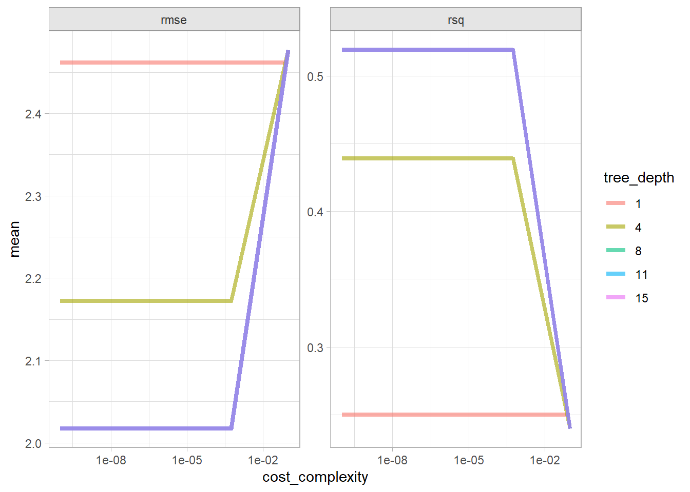
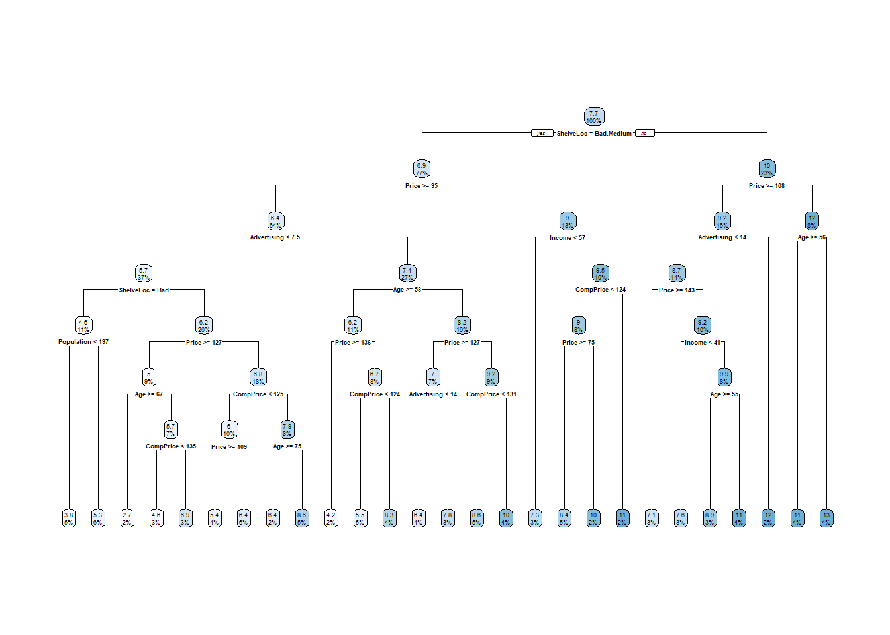

Chapter 6 Decision Trees
Decision trees, also known as classification and regression tree (CART) models, are tree-based methods for supervised machine learning.15 Simple classification trees and regression trees are easy to use and interpret, but are not competitive with the best machine learning methods. However, they form the foundation for ensemble models such as bagged trees, random forests, and boosted trees, which although less interpretable, are very accurate.
CART models segment the predictor space into \(K\) non-overlapping terminal nodes (leaves). Each node is described by a set of rules which can be used to predict new responses. The predicted value \(\hat{y}\) for each node is the mode (classification) or mean (regression).
CART models define the nodes through a top-down greedy process called recursive binary splitting. The process is top-down because it begins at the top of the tree with all observations in a single region and successively splits the predictor space. It is greedy because at each splitting step, the best split is made at that particular step without consideration to subsequent splits.
The best split is the predictor variable and cut point that minimizes a cost function. The most common cost function for regression trees is the sum of squared residuals,
\[RSS = \sum_{k=1}^K\sum_{i \in A_k}{\left(y_i - \hat{y}_{A_k} \right)^2}.\]
For classification trees, it is the Gini index,
\[G = \sum_{c=1}^C{\hat{p}_{kc}(1 - \hat{p}_{kc})},\]
and the entropy (aka information statistic)
\[D = - \sum_{c=1}^C{\hat{p}_{kc} \log \hat{p}_{kc}}\]
where \(\hat{p}_{kc}\) is the proportion of training observations in node \(k\) that are class \(c\). A completely pure node in a binary tree would have \(\hat{p} \in \{ 0, 1 \}\) and \(G = D = 0\). A completely impure node in a binary tree would have \(\hat{p} = 0.5\) and \(G = 0.5^2 \cdot 2 = 0.25\) and \(D = -(0.5 \log(0.5)) \cdot 2 = 0.69\).
CART repeats the splitting process for each child node until a stopping criterion is satisfied, usually when no node size surpasses a predefined maximum, or continued splitting does not improve the model significantly. CART may also impose a minimum number of observations in each node.
The resulting tree likely over-fits the training data and therefore does not generalize well to test data, so CART prunes the tree, minimizing the cross-validated prediction error. Rather than cross-validating every possible subtree to find the one with minimum error, CART uses cost-complexity pruning. Cost-complexity is the trade off between error (cost) and tree size (complexity) where the trade off is quantified with cost-complexity parameter \(c_p\). The cost complexity of the tree, \(R_{c_p}(T)\), is the sum of its risk (error) plus a “cost complexity” factor \(c_p\) multiple of the tree size \(|T|\).
\[R_{c_p}(T) = R(T) + c_p|T|\]
\(c_p\) can take on any value from \([0..\infty]\), but it turns out there is an optimal tree for ranges of \(c_p\) values, so there are only a finite set of interesting values for \(c_p\) (James et al. 2013) (Therneau and Atkinson 2019) (Kuhn and Johnson 2016). A parametric algorithm identifies the interesting \(c_p\) values and their associated pruned trees, \(T_{c_p}\). CART uses cross-validation to determine which \(c_p\) is optimal.
The sections in this chapter work through two case studies, using the ISLR::OJ data set to fit classification trees and predict which brand of orange juice, Citrus Hill (CH) or Minute Maid = (MM), customers opurchase from its 17 predictor variables, and using the ISLR::Carseats data set to predict average sales from its 10 feature variables.
library(rpart.plot) # better formatted plots than the ones in rpart
oj_dat <- ISLR::OJ
glimpse(oj_dat)## Rows: 1,070
## Columns: 18
## $ Purchase <fct> CH, CH, CH, MM, CH, CH, CH, CH, CH, CH, CH, CH, CH, CH,…
## $ WeekofPurchase <dbl> 237, 239, 245, 227, 228, 230, 232, 234, 235, 238, 240, …
## $ StoreID <dbl> 1, 1, 1, 1, 7, 7, 7, 7, 7, 7, 7, 7, 7, 7, 7, 7, 1, 2, 2…
## $ PriceCH <dbl> 1.75, 1.75, 1.86, 1.69, 1.69, 1.69, 1.69, 1.75, 1.75, 1…
## $ PriceMM <dbl> 1.99, 1.99, 2.09, 1.69, 1.69, 1.99, 1.99, 1.99, 1.99, 1…
## $ DiscCH <dbl> 0.00, 0.00, 0.17, 0.00, 0.00, 0.00, 0.00, 0.00, 0.00, 0…
## $ DiscMM <dbl> 0.00, 0.30, 0.00, 0.00, 0.00, 0.00, 0.40, 0.40, 0.40, 0…
## $ SpecialCH <dbl> 0, 0, 0, 0, 0, 0, 1, 1, 0, 0, 0, 0, 0, 0, 0, 0, 0, 0, 0…
## $ SpecialMM <dbl> 0, 1, 0, 0, 0, 1, 1, 0, 0, 0, 0, 0, 1, 0, 0, 0, 1, 1, 0…
## $ LoyalCH <dbl> 0.500000, 0.600000, 0.680000, 0.400000, 0.956535, 0.965…
## $ SalePriceMM <dbl> 1.99, 1.69, 2.09, 1.69, 1.69, 1.99, 1.59, 1.59, 1.59, 1…
## $ SalePriceCH <dbl> 1.75, 1.75, 1.69, 1.69, 1.69, 1.69, 1.69, 1.75, 1.75, 1…
## $ PriceDiff <dbl> 0.24, -0.06, 0.40, 0.00, 0.00, 0.30, -0.10, -0.16, -0.1…
## $ Store7 <fct> No, No, No, No, Yes, Yes, Yes, Yes, Yes, Yes, Yes, Yes,…
## $ PctDiscMM <dbl> 0.000000, 0.150754, 0.000000, 0.000000, 0.000000, 0.000…
## $ PctDiscCH <dbl> 0.000000, 0.000000, 0.091398, 0.000000, 0.000000, 0.000…
## $ ListPriceDiff <dbl> 0.24, 0.24, 0.23, 0.00, 0.00, 0.30, 0.30, 0.24, 0.24, 0…
## $ STORE <dbl> 1, 1, 1, 1, 0, 0, 0, 0, 0, 0, 0, 0, 0, 0, 0, 0, 1, 2, 2…## Rows: 400
## Columns: 11
## $ Sales <dbl> 9.50, 11.22, 10.06, 7.40, 4.15, 10.81, 6.63, 11.85, 6.54, …
## $ CompPrice <dbl> 138, 111, 113, 117, 141, 124, 115, 136, 132, 132, 121, 117…
## $ Income <dbl> 73, 48, 35, 100, 64, 113, 105, 81, 110, 113, 78, 94, 35, 2…
## $ Advertising <dbl> 11, 16, 10, 4, 3, 13, 0, 15, 0, 0, 9, 4, 2, 11, 11, 5, 0, …
## $ Population <dbl> 276, 260, 269, 466, 340, 501, 45, 425, 108, 131, 150, 503,…
## $ Price <dbl> 120, 83, 80, 97, 128, 72, 108, 120, 124, 124, 100, 94, 136…
## $ ShelveLoc <fct> Bad, Good, Medium, Medium, Bad, Bad, Medium, Good, Medium,…
## $ Age <dbl> 42, 65, 59, 55, 38, 78, 71, 67, 76, 76, 26, 50, 62, 53, 52…
## $ Education <dbl> 17, 10, 12, 14, 13, 16, 15, 10, 10, 17, 10, 13, 18, 18, 18…
## $ Urban <fct> Yes, Yes, Yes, Yes, Yes, No, Yes, Yes, No, No, No, Yes, Ye…
## $ US <fct> Yes, Yes, Yes, Yes, No, Yes, No, Yes, No, Yes, Yes, Yes, N…Partition the data sets into training and testing sets. Use the training set to estimate parameters, compare models and feature engineering techniques, and tune models. Use the testing set as an unbiased source for measuring final model performance. The test set is held in reserve until the end of the project at which point there are only be one or two models under serious consideration.
set.seed(12345)
(oj_split <- initial_split(oj_dat, prop = 0.8, strata = Purchase))
## <Training/Testing/Total>
## <855/215/1070>
oj_train <- training(oj_split)
oj_test <- testing(oj_split)
(cs_split <- initial_split(cs_dat, prop = 0.8))
## <Training/Testing/Total>
## <320/80/400>
cs_train <- training(cs_split)
cs_test <- testing(cs_split)6.1 Classification Tree
The simple classification tree is uncommon, but it is the foundation for the more complex ensemble models.
Function rpart::rpart() builds a full tree, minimizing the Gini index \(G\) by default (parms = list(split = "gini")), until the stopping criterion is satisfied. The default stopping criterion is
- only attempt a split if the current node has at least
minsplit = 20observations, and - only accept a split if
- the resulting nodes have at least
minbucket = round(minsplit/3)observations, and - the resulting overall fit improves by
cp = 0.01(i.e., \(\Delta G <= 0.01\)).
- the resulting nodes have at least
Some model parameters like cp (see ?rpart.control) are hyperparameters that cannot be optimized directly from the training data set. You can tune hyperparameters by training many models on resampled data sets and exploring how well the models perform.
The tidymodels vignette explains that predictive models should train with resampling methods such as cross-validation to get a short list of candidate models, then choose the best model by comparing performance on the test set. I.e., model selection is a two-phased competition. In this context, we can use CV to fit the best classification tree, then in the next section fit the best bagged tree, then random forest, and so on. The second phase would be to compare all models on the test set.16
oj_cart <- list()
# `decision_tree` has 3 hyperparameters (`cost_complexity`, `tree_depth`, and
# `min_n`). Set their value to `tune()` if you want to optimize any one. Let's
# optimize just `cost_complexity` and `tree_depth`.
oj_cart$model <-
decision_tree(
cost_complexity = tune(),
tree_depth = tune()
) %>%
set_engine("rpart") %>%
set_mode("classification")
# Tune a model using the workflow framework.
oj_cart$workflow <-
workflow() %>%
add_model(oj_cart$model) %>%
add_formula(Purchase ~ .)
# Tune the model with 10-fold CV using a regular grid of cost complexity values.
# With 2 hyperparameters and 5 levels, the grid has 5^2=25 combinations. That
# means the tuning exercise will fit 25 models to each of 10 folds = 250 fits.
oj_cart$tune_grid <-
oj_cart$workflow %>%
tune_grid(
resamples = vfold_cv(oj_train, v = 10),
grid = grid_regular(cost_complexity(), tree_depth(), levels = 5)
)
# `collect_metrics()` returns two metrics: accuracy and ROC-AUC.
oj_cart$tune_grid %>%
collect_metrics() %>%
mutate(tree_depth = factor(tree_depth)) %>%
ggplot(aes(x = cost_complexity, y = mean, color = tree_depth)) +
geom_line(linewidth = 1.5, alpha = .6) +
facet_wrap(facets = vars(.metric), scales = "free") +
scale_x_log10()
The best models in terms of accuracy and ROC was the tree depth of 4 and any cp < .01.
## # A tibble: 5 × 8
## cost_complexity tree_depth .metric .estimator mean n std_err .config
## <dbl> <int> <chr> <chr> <dbl> <int> <dbl> <chr>
## 1 0.0000000001 4 accuracy binary 0.804 10 0.0149 Preprocess…
## 2 0.0000000178 4 accuracy binary 0.804 10 0.0149 Preprocess…
## 3 0.00000316 4 accuracy binary 0.804 10 0.0149 Preprocess…
## 4 0.000562 4 accuracy binary 0.804 10 0.0149 Preprocess…
## 5 0.0000000001 8 accuracy binary 0.800 10 0.0165 Preprocess…Select the best model in terms of accuracy and finalize the model.
oj_cart$best_tune <- select_best(oj_cart$tune_grid, "accuracy")
# `finalize_workflow()` applies the tuning parameters to the workflow.
oj_cart$final_workflow <- finalize_workflow(oj_cart$workflow, oj_cart$best_tune)
# last_fit() fits the model with the full training set and evaluates it on the
# testing data.
oj_cart$fit <-
oj_cart$final_workflow %>%
last_fit(oj_split)Here is the tree. The output starts with the root node. The predicted class at the root is CH and this prediction produces 333 errors on the 855 observations for a 61% success rate (accuracy) and 39% error rate. The child nodes of node “x” are labeled 2x) and 2x+1), so the child nodes of 1) are 2) and 3), and the child nodes of 2) are 4) and 5), etc. Terminal nodes are labeled with an asterisk (*).
## ══ Workflow [trained] ═════════════════════════════════════════════════════════════════════════════════════════════════════════════════════
## Preprocessor: Formula
## Model: decision_tree()
##
## ── Preprocessor ───────────────────────────────────────────────────────────────────────────────────────────────────────────────────────────
## Purchase ~ .
##
## ── Model ──────────────────────────────────────────────────────────────────────────────────────────────────────────────────────────────────
## n= 855
##
## node), split, n, loss, yval, (yprob)
## * denotes terminal node
##
## 1) root 855 333 CH (0.61052632 0.38947368)
## 2) LoyalCH>=0.48285 534 92 CH (0.82771536 0.17228464)
## 4) LoyalCH>=0.7535455 273 13 CH (0.95238095 0.04761905) *
## 5) LoyalCH< 0.7535455 261 79 CH (0.69731801 0.30268199)
## 10) PriceDiff>=-0.165 221 48 CH (0.78280543 0.21719457) *
## 11) PriceDiff< -0.165 40 9 MM (0.22500000 0.77500000) *
## 3) LoyalCH< 0.48285 321 80 MM (0.24922118 0.75077882)
## 6) LoyalCH>=0.2761415 148 58 MM (0.39189189 0.60810811)
## 12) SalePriceMM>=2.04 71 31 CH (0.56338028 0.43661972) *
## 13) SalePriceMM< 2.04 77 18 MM (0.23376623 0.76623377)
## 26) SpecialCH>=0.5 14 6 CH (0.57142857 0.42857143) *
## 27) SpecialCH< 0.5 63 10 MM (0.15873016 0.84126984) *
## 7) LoyalCH< 0.2761415 173 22 MM (0.12716763 0.87283237) *The first split is at LoyalCH = 0.48285. Here is a diagram of the tree. The node label indicates the predicted value, error rate, and proportion of observations included. Below the nodes are the splitting criteria.
oj_cart$fit %>%
extract_workflow() %>%
extract_fit_engine() %>%
rpart.plot(yesno = TRUE, roundint = FALSE)The boxes show the node classification (based on mode), the proportion of observations that are not CH, and the proportion of observations included in the node.
LoyalCH was the most important variable, followed by PriceDiff. A variable’s importance is the sum of the improvement in the overall Gini (or RMSE) measure produced by the nodes in which it appears. From the rpart vignette (page 12),
“An overall measure of variable importance is the sum of the goodness of split measures for each split for which it was the primary variable, plus goodness (adjusted agreement) for all splits in which it was a surrogate.”
Measuring Performance
collect_metrics() shows the accuracy and ROC AUC metrics.
## # A tibble: 2 × 4
## .metric .estimator .estimate .config
## <chr> <chr> <dbl> <chr>
## 1 accuracy binary 0.856 Preprocessor1_Model1
## 2 roc_auc binary 0.909 Preprocessor1_Model1You can explore the performance by calculating the full confusion matrix and visualizing the ROC curve.
Confusion Matrix
The confusion matrix calculates the model performance predicting on the holdout testing data set.
oj_cart$confmat <-
oj_cart$fit %>%
collect_predictions() %>%
conf_mat(truth = Purchase, estimate = .pred_class)
# oj_cart$preds <-
# bind_cols(
# predict(oj_cart$fit, new_data = oj_test, type = "prob"),
# predicted = predict(oj_cart$fit, new_data = oj_test, type = "class"),
# actual = oj_test$Purchase
# )
oj_cart$confmat
## Truth
## Prediction CH MM
## CH 120 20
## MM 11 64
summary(oj_cart$confmat)
## # A tibble: 13 × 3
## .metric .estimator .estimate
## <chr> <chr> <dbl>
## 1 accuracy binary 0.856
## 2 kap binary 0.691
## 3 sens binary 0.916
## 4 spec binary 0.762
## 5 ppv binary 0.857
## 6 npv binary 0.853
## 7 mcc binary 0.694
## 8 j_index binary 0.678
## 9 bal_accuracy binary 0.839
## 10 detection_prevalence binary 0.651
## 11 precision binary 0.857
## 12 recall binary 0.916
## 13 f_meas binary 0.886You can bound the accuracy with a 95% CI using the binomial test.
##
## Exact binomial test
##
## data: oj_cart$confmat$table %>% diag() %>% sum() and oj_cart$confmat$table %>% sum()
## number of successes = 184, number of trials = 215, p-value < 2.2e-16
## alternative hypothesis: true probability of success is not equal to 0.5
## 95 percent confidence interval:
## 0.8016244 0.8998833
## sample estimates:
## probability of success
## 0.855814The detection prevalence (aka, no information rate (NIR)) statistic is the class rate for the largest class. In this case CH is the largest class, so NIR = 133/213 = 0.6186. The binomial test for NIR is the probability of that the model accuracy is significantly better than the NIR (i.e., significantly better than just always guessing CH).
binom.test(
x = oj_cart$confmat$table["CH", ] %>% sum(),
n = oj_cart$confmat$table %>% sum(),
p = sum(oj_cart$confmat$table[, "CH"]) / sum(oj_cart$confmat$table),
alternative = "greater"
)##
## Exact binomial test
##
## data: oj_cart$confmat$table["CH", ] %>% sum() and oj_cart$confmat$table %>% sum()
## number of successes = 140, number of trials = 215, p-value = 0.1169
## alternative hypothesis: true probability of success is greater than 0.6093023
## 95 percent confidence interval:
## 0.5940371 1.0000000
## sample estimates:
## probability of success
## 0.6511628binom.test(x = 116 + 67, n = sum(oj_cart$confmat$table),
p = (116+17)/sum(oj_cart$confmat$table),
alternative = "greater")##
## Exact binomial test
##
## data: 116 + 67 and sum(oj_cart$confmat$table)
## number of successes = 183, number of trials = 215, p-value = 5.461e-14
## alternative hypothesis: true probability of success is greater than 0.6186047
## 95 percent confidence interval:
## 0.8052886 1.0000000
## sample estimates:
## probability of success
## 0.8511628The accuracy statistic indicates the model predicts 85.6% of the observations correctly. That’s good, but less impressive when you consider the prevalence of CH is 65.1% - you could achieve that accuracy just by predicting CH every time. A measure that controls for the prevalence is Cohen’s kappa statistic. The kappa statistic is explained here. It compares the accuracy to the accuracy of a “random system”. It is defined as
\[\kappa = \frac{\text{Accuracy} - RA}{1-RA}\]
where
\[RA = \frac{\text{ActFalse} \times \text{PredFalse} + \text{ActTrue} \times \text{PredTrue}}{\text{Total} \times \text{Total}}\]
is the hypothetical probability of a chance agreement.
The kappa statistic varies from 0 to 1 where 0 means accurate predictions occur merely by chance, and 1 means the predictions are in perfect agreement with the observations. In this case, a kappa statistic of 0.7064 is “substantial”. See chart here.
You can remind yourself what the other confusion matrix measures are from the documentation. Visuals are almost always helpful. Here is a plot of the confusion matrix.
oj_cart$fit %>%
collect_predictions() %>%
select(Purchase, .pred_class) %>%
plot(
main = "Simple Classification: Predicted vs. Actual",
xlab = "Actual",
ylab = "Predicted"
)
ROC Curve
The ROC (receiver operating characteristics) curve (Fawcett 2005) is another measure of accuracy. The ROC curve is a plot of the true positive rate (TPR, sensitivity) versus the false positive rate (FPR, 1 - specificity) for a set of thresholds. By default, the threshold for predicting the default classification is 0.50, but it could be any threshold. precrec::evalmod() calculates the confusion matrix values from the model using the holdout data set. The AUC on the holdout set is 0.909. pRoc::plot.roc(), plotROC::geom_roc(), and yardstick::roc_curve() are options for plotting a ROC curve.
oj_cart$fit %>%
collect_predictions() %>%
yardstick::roc_curve(Purchase, .pred_CH) %>%
autoplot() +
labs(title = "OJ CART ROC Curve")A few points on the ROC space are helpful for understanding how to use it.
- The lower left point (0, 0) is the result of always predicting “negative” or in this case “MM” if “CH” is taken as the default class. No false positives, but no true positives either.
- The upper right point (1, 1) is the result of always predicting “positive” (“CH” here). You catch all true positives, but miss all the true negatives.
- The upper left point (0, 1) is the result of perfect accuracy.
- The lower right point (1, 0) is the result of perfect imbecility. You made the exact wrong prediction every time.
- The 45 degree diagonal is the result of randomly guessing positive (CH) X percent of the time. If you guess positive 90% of the time and the prevalence is 50%, your TPR will be 90% and your FPR will also be 90%, etc.
The goal is for all nodes to bunch up in the upper left.
Points to the left of the diagonal with a low TPR can be thought of as “conservative” predictors - they only make positive (CH) predictions with strong evidence. Points to the left of the diagonal with a high TPR can be thought of as “liberal” predictors - they make positive (CH) predictions with weak evidence.
6.1.0.1 Gain Curve
The gain curve plots the cumulative summed true outcome versus the fraction of items seen when sorted by the predicted value. The “wizard” curve is the gain curve when the data is sorted by the true outcome. If the model’s gain curve is close to the wizard curve, then the model predicted the response variable well. The gray area is the “gain” over a random prediction.
131 of the 215 consumers in the holdout testing set purchased CH.
## # A tibble: 8 × 4
## .n .n_events .percent_tested .percent_found
## <dbl> <dbl> <dbl> <dbl>
## 1 0 0 0 0
## 2 82 79 38.1 60.3
## 3 129 114 60 87.0
## 4 131 116 60.9 88.5
## 5 140 120 65.1 91.6
## 6 146 123 67.9 93.9
## 7 165 126 76.7 96.2
## 8 215 131 100 100The gain curve encountered 79 CH purchasers (60.3%) within the first 82 observations (38.1%).
It encountered all 131 CH purchasers on the 215th observation (100%).
The bottom of the gray area is the outcome of a random model. Only half the CH purchasers would be observed within 50% of the observations. The top of the gray area is the outcome of the perfect model, the “wizard curve”. Half the CH purchasers would be observed in ~30% of the observations.
6.2 Regression Tree
A simple regression tree is built in a manner similar to a simple classification tree, and like the simple classification tree, it is rarely invoked on its own; the bagged, random forest, and gradient boosting methods build on this logic.
The first step is to build a full tree, then perform k-fold cross-validation to help select the optimal cost complexity (cp). The only difference here is the set_Mode("regression") call to produce a regression tree.
cs_cart <- list()
# `decision_tree` has 3 hyperparameters (`cost_complexity`, `tree_depth`, and
# `min_n`). Set their value to `tune()` if you want to optimize any one. Let's
# optimize just `cost_complexity` and `tree_depth`.
cs_cart$model <-
decision_tree(
cost_complexity = tune(),
tree_depth = tune()
) %>%
set_engine("rpart") %>%
set_mode("regression")
# Tune a model using the workflow framework.
cs_cart$workflow <-
workflow() %>%
add_model(cs_cart$model) %>%
add_formula(Sales ~ .)
# Tune the model with 10-fold CV using a regular grid of cost complexity values.
# With 2 hyperparameters and 5 levels, the grid has 5^2=25 combinations. That
# means the tuning exercise will fit 25 models to each of 10 folds = 250 fits.
cs_cart$tune_grid <-
cs_cart$workflow %>%
tune_grid(
resamples = vfold_cv(cs_train, v = 10),
grid = grid_regular(cost_complexity(), tree_depth(), levels = 5)
)
# `collect_metrics()` returns two metrics: rmse and rsq.
cs_cart$tune_grid %>%
collect_metrics() %>%
mutate(tree_depth = factor(tree_depth)) %>%
ggplot(aes(x = cost_complexity, y = mean, color = tree_depth)) +
geom_line(linewidth = 1.5, alpha = .6) +
facet_wrap(facets = vars(.metric), scales = "free") +
scale_x_log10()
The best models in terms of RMSE was the tree depth of 8 and any cp < 5.6E-04.
## # A tibble: 5 × 8
## cost_complexity tree_depth .metric .estimator mean n std_err .config
## <dbl> <int> <chr> <chr> <dbl> <int> <dbl> <chr>
## 1 0.0000000001 8 rmse standard 2.02 10 0.0731 Preprocesso…
## 2 0.0000000178 8 rmse standard 2.02 10 0.0731 Preprocesso…
## 3 0.00000316 8 rmse standard 2.02 10 0.0731 Preprocesso…
## 4 0.000562 8 rmse standard 2.02 10 0.0731 Preprocesso…
## 5 0.0000000001 11 rmse standard 2.02 10 0.0731 Preprocesso…Select the best model in terms of rmse and finalize the model.
cs_cart$best_tune <- select_best(cs_cart$tune_grid, "rmse")
# `finalize_workflow()` applies the tuning parameters to the workflow.
cs_cart$final_workflow <- finalize_workflow(cs_cart$workflow, cs_cart$best_tune)
# last_fit() fits the model with the full training set and evaluates it on the
# testing data.
cs_cart$fit <-
cs_cart$final_workflow %>%
last_fit(cs_split)Here is the tree. The output starts with the root node. The predicted sales at the root is the mean sales in the testing data set is 7.65 (values are $000s). The deviance at the root is the SSE, 2,551. The first split is at ShelveLoc = [Bad, Medium] vs Good.
## ══ Workflow [trained] ═════════════════════════════════════════════════════════════════════════════════════════════════════════════════════
## Preprocessor: Formula
## Model: decision_tree()
##
## ── Preprocessor ───────────────────────────────────────────────────────────────────────────────────────────────────────────────────────────
## Sales ~ .
##
## ── Model ──────────────────────────────────────────────────────────────────────────────────────────────────────────────────────────────────
## n= 320
##
## node), split, n, deviance, yval
## * denotes terminal node
##
## 1) root 320 2551.272000 7.654125
## 2) ShelveLoc=Bad,Medium 245 1430.391000 6.880531
## 4) Price>=94.5 204 1040.546000 6.447353
## 8) Advertising< 7.5 119 495.019700 5.743025
## 16) ShelveLoc=Bad 35 107.500700 4.609714
## 32) Population< 196.5 16 48.386700 3.837500 *
## 33) Population>=196.5 19 41.538400 5.260000 *
## 17) ShelveLoc=Medium 84 323.834500 6.215238
## 34) Price>=127 28 119.289000 4.952857
## 68) Age>=67 7 22.955970 2.734286 *
## 69) Age< 67 21 50.393780 5.692381
## 138) CompPrice< 135 11 10.383490 4.590909 *
## 139) CompPrice>=135 10 11.984440 6.904000 *
## 35) Price< 127 56 137.614100 6.846429
## 70) CompPrice< 124.5 31 36.984390 6.012581
## 140) Price>=108.5 12 10.703470 5.443333 *
## 141) Price< 108.5 19 19.936520 6.372105 *
## 71) CompPrice>=124.5 25 52.347900 7.880400
## 142) Age>=74.5 8 11.584690 6.398750 *
## 143) Age< 74.5 17 14.936310 8.577647 *
## 9) Advertising>=7.5 85 403.846300 7.433412
## 18) Age>=58 34 150.180000 6.219412
## 36) Price>=135.5 7 7.098371 4.184286 *
## 37) Price< 135.5 27 106.573000 6.747037
## 74) CompPrice< 123.5 15 34.053370 5.501333 *
## 75) CompPrice>=123.5 12 20.147090 8.304167 *
## 19) Age< 58 51 170.151200 8.242745
## 38) Price>=127 22 49.335900 6.969545
## 76) Advertising< 14 13 19.492320 6.385385 *
## 77) Advertising>=14 9 18.999600 7.813333 *
## 39) Price< 127 29 58.097940 9.208621
## 78) CompPrice< 130.5 16 27.176440 8.598125 *
## 79) CompPrice>=130.5 13 17.618800 9.960000 *
## 5) Price< 94.5 41 161.103600 9.035854
## 10) Income< 57 9 29.422620 7.285556 *
## 11) Income>=57 32 96.354490 9.528125
## 22) CompPrice< 123.5 24 54.578700 8.990417
## 44) Price>=74.5 17 26.677550 8.412941 *
## 45) Price< 74.5 7 8.464143 10.392860 *
## 23) CompPrice>=123.5 8 14.019290 11.141250 *
## 3) ShelveLoc=Good 75 495.303800 10.181200
## 6) Price>=107.5 51 267.569700 9.221765
## 12) Advertising< 13.5 44 176.815800 8.706818
## 24) Price>=142.5 11 36.270690 7.099091 *
## 25) Price< 142.5 33 102.634900 9.242727
##
## ...
## and 8 more lines.Here is a diagram of the tree. The node label indicates the predicted value (mean) and the proportion of observations that are in the node (or child nodes). Below the nodes are the splitting criteria.
cs_cart$fit %>%
extract_workflow() %>%
extract_fit_engine() %>%
rpart.plot(yesno = TRUE, roundint = FALSE)
Price and ShelveLoc were the most important variables.

Measuring Performance
collect_metrics() returns the RMSE, \(RMSE = \sqrt{(1/2) \sum{(actual - pred)^2}})\) and the model \(R^2\). The RMSE of 2.11 in the test data set is pretty good considering the standard deviation of Sales is 2.74.
## # A tibble: 2 × 4
## .metric .estimator .estimate .config
## <chr> <chr> <dbl> <chr>
## 1 rmse standard 2.11 Preprocessor1_Model1
## 2 rsq standard 0.464 Preprocessor1_Model1Here is a predicted vs actual plot.
cs_cart$fit %>%
collect_predictions() %>%
ggplot(aes(x = Sales, y = .pred)) +
geom_point(alpha = 0.6, color = "cadetblue") +
geom_smooth(method = "loess", formula = "y~x") +
geom_abline(intercept = 0, slope = 1, linetype = 2) +
labs(title = "Carseats CART, Predicted vs Actual")The tree nodes do a decent job of binning the observations. The predictions vs actuals plot suggests the model over-estimates at the low end and underestimates at the high end. Calculate the test data set RMSE.
6.3 Bagged Trees
One drawback of decision trees is that they are high-variance estimators. A small number of additional training observations can dramatically alter the prediction performance of a learned tree.
Bootstrap aggregation, or bagging, is a general-purpose procedure for reducing the variance of a statistical learning method. The algorithm constructs B regression trees using B bootstrapped training sets, and averages the resulting predictions. These trees are grown deep, and are not pruned. Hence each individual tree has high variance, but low bias. Averaging the B trees reduces the variance. The predicted value for an observation is the mode (classification) or mean (regression) of the trees. B usually equals ~25.
To test the model accuracy, the out-of-bag observations are predicted from the models. For a training set of size n, each tree is composed of \(\sim (1 - e^{-1})n = .632n\) unique observations in-bag and \(.368n\) out-of-bag. For each tree in the ensemble, bagging makes predictions on the tree’s out-of-bag observations. I think (see page 197 of (Kuhn and Johnson 2016)) bagging measures the performance (RMSE, Accuracy, ROC, etc.) of each tree in the ensemble and averages them to produce an overall performance estimate. (This makes no sense to me. If each tree has poor performance, then the average performance of many trees will still be poor. An ensemble of B trees will produce \(\sim .368 B\) predictions per unique observation. Seems like you should take the mean/mode of each observation’s prediction as the final prediction. Then you have n predictions to compare to n actuals, and you assess performance on that.)
The downside to bagging is that there is no single tree with a set of rules to interpret. It becomes unclear which variables are more important than others.
The next section explains how bagged trees are a special case of random forests.
6.3.1 Bagged Classification Tree
Leaning by example, I’ll predict Purchase from the OJ data set again, this time using the bagging with parsnip::bag_tree().
oj_bag <- list()
# `bag_tree` has 4 hyperparameters (`cost_complexity`, `tree_depth`, and
# `min_n`). Set their value to `tune()` if you want to optimize any one. Let's
# optimize just `cost_complexity` and `tree_depth`.
oj_bag$model <-
bag_tree(
cost_complexity = tune(),
tree_depth = tune()
) %>%
set_engine("rpart") %>%
set_mode("classification")
# Tune a model using the workflow framework.
oj_bag$workflow <-
workflow() %>%
add_model(oj_bag$model) %>%
add_formula(Purchase ~ .)
# Tune the model with 10-fold CV using a regular grid of cost complexity values.
# With 2 hyperparameters and 5 levels, the grid has 5^2=25 combinations. That
# means the tuning exercise will fit 25 models to each of 10 folds = 250 fits.
oj_bag$tune_grid <-
oj_bag$workflow %>%
tune_grid(
resamples = vfold_cv(oj_train, v = 10),
grid = grid_regular(cost_complexity(), tree_depth(), levels = 5)
)
# `collect_metrics()` returns two metrics: accuracy and ROC-AUC.
oj_bag$tune_grid %>%
collect_metrics() %>%
mutate(tree_depth = factor(tree_depth)) %>%
ggplot(aes(x = cost_complexity, y = mean, color = tree_depth)) +
geom_line(linewidth = 1.5, alpha = .6) +
facet_wrap(facets = vars(.metric), scales = "free") +
scale_x_log10()
The best models in terms of accuracy and ROC was the tree depth of 4 and any cp <= 3.16e-06.
## # A tibble: 5 × 8
## cost_complexity tree_depth .metric .estimator mean n std_err .config
## <dbl> <int> <chr> <chr> <dbl> <int> <dbl> <chr>
## 1 0.0000000001 4 accuracy binary 0.816 10 0.00944 Preprocess…
## 2 0.00000316 4 accuracy binary 0.816 10 0.0113 Preprocess…
## 3 0.000562 4 accuracy binary 0.814 10 0.00700 Preprocess…
## 4 0.0000000178 4 accuracy binary 0.813 10 0.00986 Preprocess…
## 5 0.0000000178 8 accuracy binary 0.802 10 0.0108 Preprocess…Select the best model in terms of accuracy and finalize the model.
oj_bag$best_tune <- select_best(oj_bag$tune_grid, "accuracy")
# `finalize_workflow()` applies the tuning parameters to the workflow.
oj_bag$final_workflow <- finalize_workflow(oj_bag$workflow, oj_bag$best_tune)
# last_fit() fits the model with the full training set and evaluates it on the
# testing data.
oj_bag$fit <-
oj_bag$final_workflow %>%
last_fit(oj_split)I think tidymodels started by splitting the training set into 10 folds, then using 9 of the folds to run the bagging algorithm and collect performance measures on the hold-out fold. After repeating the process for all 10 folds, it averaged the performance measures to produce the resampling results shown below. With hyperparameters, the process is repeated for all combinations and the resampling results above are from the best performing combination.
There is no single tree to visualize, and you can’t even produce a VIP. Let’s look at the performance on the holdout data set. collect_metrics() shows the accuracy and ROC AUC metrics. The accuracy is slightly lower than the single tree, but ROC AUC is higher.
## # A tibble: 2 × 4
## .metric .estimator .estimate .config
## <chr> <chr> <dbl> <chr>
## 1 accuracy binary 0.842 Preprocessor1_Model1
## 2 roc_auc binary 0.925 Preprocessor1_Model1You can explore the performance by calculating the full confusion matrix and visualizing the ROC curve. The confusion matrix calculates the model performance predicting on the holdout testing data set.
oj_bag$confmat <-
oj_bag$fit %>%
collect_predictions() %>%
conf_mat(truth = Purchase, estimate = .pred_class)
oj_bag$confmat
## Truth
## Prediction CH MM
## CH 115 18
## MM 16 66
summary(oj_bag$confmat)
## # A tibble: 13 × 3
## .metric .estimator .estimate
## <chr> <chr> <dbl>
## 1 accuracy binary 0.842
## 2 kap binary 0.666
## 3 sens binary 0.878
## 4 spec binary 0.786
## 5 ppv binary 0.865
## 6 npv binary 0.805
## 7 mcc binary 0.667
## 8 j_index binary 0.664
## 9 bal_accuracy binary 0.832
## 10 detection_prevalence binary 0.619
## 11 precision binary 0.865
## 12 recall binary 0.878
## 13 f_meas binary 0.871
oj_bag$fit %>%
collect_predictions() %>%
select(Purchase, .pred_class) %>%
plot(
main = "Bagged Trees: Predicted vs. Actual",
xlab = "Actual",
ylab = "Predicted"
)
The ROC curve is a plot of the true positive rate (TPR, sensitivity) versus the false positive rate (FPR, 1 - specificity) for a set of thresholds. The AUC on the holdout set is 0.925.
oj_bag$fit %>%
collect_predictions() %>%
yardstick::roc_curve(Purchase, .pred_CH) %>%
autoplot() +
labs(title = "OJ Bagged Trees ROC Curve")
The gain curve plots the cumulative summed true outcome versus the fraction of items seen when sorted by the predicted value.
oj_bag$fit %>%
collect_predictions() %>%
yardstick::gain_curve(Purchase, .pred_CH) %>%
autoplot() +
labs(title = "OJ Bagged Trees Gain Curve")
6.3.2 Bagging Regression Tree
I’ll predict Sales from the Carseats data set again, this time with parsnip::bag_tree().
library(baguette)
cs_bag <- list()
# `bag_tree` has 4 hyperparameters (`cost_complexity`, `tree_depth`, and
# `min_n`). Set their value to `tune()` if you want to optimize any one. Let's
# optimize just `cost_complexity` and `tree_depth`.
cs_bag$model <-
bag_tree(
cost_complexity = tune(),
tree_depth = tune()
) %>%
set_engine("rpart") %>%
set_mode("regression")
# Tune a model using the workflow framework.
cs_bag$workflow <-
workflow() %>%
add_model(cs_bag$model) %>%
add_formula(Sales ~ .)
# Tune the model with 10-fold CV using a regular grid of cost complexity values.
# With 2 hyperparameters and 5 levels, the grid has 5^2=25 combinations. That
# means the tuning exercise will fit 25 models to each of 10 folds = 250 fits.
cs_bag$tune_grid <-
cs_bag$workflow %>%
tune_grid(
resamples = vfold_cv(cs_train, v = 10),
grid = grid_regular(cost_complexity(), tree_depth(), levels = 5)
)
# `collect_metrics()` returns two metrics: accuracy and ROC-AUC.
cs_bag$tune_grid %>%
collect_metrics() %>%
mutate(tree_depth = factor(tree_depth)) %>%
ggplot(aes(x = cost_complexity, y = mean, color = tree_depth)) +
geom_line(linewidth = 1.5, alpha = .6) +
facet_wrap(facets = vars(.metric), scales = "free") +
scale_x_log10()
The best models in terms of RMSE was the tree depth of 8 and any cp < 5.6E-04.
## # A tibble: 5 × 8
## cost_complexity tree_depth .metric .estimator mean n std_err .config
## <dbl> <int> <chr> <chr> <dbl> <int> <dbl> <chr>
## 1 0.000562 11 rmse standard 1.58 10 0.0416 Preprocesso…
## 2 0.0000000178 15 rmse standard 1.58 10 0.0585 Preprocesso…
## 3 0.000562 15 rmse standard 1.59 10 0.0639 Preprocesso…
## 4 0.0000000001 11 rmse standard 1.60 10 0.0652 Preprocesso…
## 5 0.00000316 8 rmse standard 1.63 10 0.0618 Preprocesso…Select the best model in terms of rmse and finalize the model.
cs_bag$best_tune <- select_best(cs_bag$tune_grid, "rmse")
# `finalize_workflow()` applies the tuning parameters to the workflow.
cs_bag$final_workflow <- finalize_workflow(cs_bag$workflow, cs_bag$best_tune)
# last_fit() fits the model with the full training set and evaluates it on the
# testing data.
cs_bag$fit <-
cs_bag$final_workflow %>%
last_fit(cs_split)collect_metrics() returns the RMSE, \(RMSE = \sqrt{(1/2) \sum{(actual - pred)^2}})\) and the model \(R^2\). The RMSE of 1.68 in the test data set is pretty good considering the standard deviation of Sales is 2.74.
## # A tibble: 2 × 4
## .metric .estimator .estimate .config
## <chr> <chr> <dbl> <chr>
## 1 rmse standard 1.68 Preprocessor1_Model1
## 2 rsq standard 0.643 Preprocessor1_Model1Here is a predicted vs actual plot.
6.4 Random Forests
Random forests improve bagged trees by way of a small tweak that de-correlates the trees. As in bagging, the algorithm builds a number of decision trees on bootstrapped training samples. But when building these decision trees, each time a split in a tree is considered, a random sample of mtry predictors is chosen as split candidates from the full set of p predictors. A fresh sample of mtry predictors is taken at each split. Typically \(mtry \sim \sqrt{p}\). Bagged trees are thus a special case of random forests where mtry = p.
6.4.0.1 Random Forest Classification Tree
Leaning by example, I’ll predict Purchase from the OJ data set again, this time using the bagging with parsnip::rand_forest().
oj_rf <- list()
# `rand_forest` has 3 hyperparameters (`mtry`, `trees`, and
# `min_n`). Set their value to `tune()` if you want to optimize any one. Let's
# optimize just `trees` and `min_n`.
oj_rf$model <-
rand_forest(
trees = tune(),
min_n = tune()
) %>%
set_engine("ranger") %>%
set_mode("classification")
# Tune a model using the workflow framework.
oj_rf$workflow <-
workflow() %>%
add_model(oj_rf$model) %>%
add_formula(Purchase ~ .)
# Tune the model with 10-fold CV using a regular grid of cost complexity values.
# With 2 hyperparameters and 5 levels, the grid has 5^2=25 combinations. That
# means the tuning exercise will fit 25 models to each of 10 folds = 250 fits.
oj_rf$tune_grid <-
oj_rf$workflow %>%
tune_grid(
resamples = vfold_cv(oj_train, v = 10),
grid = grid_regular(trees(), min_n(), levels = 5)
)
# `collect_metrics()` returns two metrics: accuracy and ROC-AUC.
oj_rf$tune_grid %>%
collect_metrics() %>%
mutate(trees = factor(trees)) %>%
ggplot(aes(x = min_n, y = mean, color = trees)) +
geom_line(linewidth = 1.5, alpha = .6) +
facet_wrap(facets = vars(.metric), scales = "free") +
scale_x_log10()
The best models in terms of accuracy and ROC was the trees of 1000 and any minimum node size of 40.
## # A tibble: 5 × 8
## trees min_n .metric .estimator mean n std_err .config
## <int> <int> <chr> <chr> <dbl> <int> <dbl> <chr>
## 1 1500 30 accuracy binary 0.813 10 0.0122 Preprocessor1_Model19
## 2 1000 40 accuracy binary 0.812 10 0.0111 Preprocessor1_Model23
## 3 500 40 accuracy binary 0.812 10 0.0125 Preprocessor1_Model22
## 4 1000 30 accuracy binary 0.812 10 0.0130 Preprocessor1_Model18
## 5 500 30 accuracy binary 0.812 10 0.0127 Preprocessor1_Model17Select the best model in terms of accuracy and finalize the model.
oj_rf$best_tune <- select_best(oj_rf$tune_grid, "accuracy")
# `finalize_workflow()` applies the tuning parameters to the workflow.
oj_rf$final_workflow <- finalize_workflow(oj_rf$workflow, oj_rf$best_tune)
# last_fit() fits the model with the full training set and evaluates it on the
# testing data.
oj_rf$fit <-
oj_rf$final_workflow %>%
last_fit(oj_split)There is no single tree to visualize, and you can’t even produce a VIP. Let’s look at the performance on the holdout data set. collect_metrics() shows the accuracy and ROC AUC metrics. The accuracy is slightly lower than the single tree, but ROC AUC is higher than both the single tree and bagged trees.
## # A tibble: 2 × 4
## .metric .estimator .estimate .config
## <chr> <chr> <dbl> <chr>
## 1 accuracy binary 0.847 Preprocessor1_Model1
## 2 roc_auc binary 0.935 Preprocessor1_Model1You can explore the performance by calculating the full confusion matrix and visualizing the ROC curve. The confusion matrix calculates the model performance predicting on the holdout testing data set.
oj_rf$confmat <-
oj_rf$fit %>%
collect_predictions() %>%
conf_mat(truth = Purchase, estimate = .pred_class)
oj_rf$confmat
## Truth
## Prediction CH MM
## CH 116 18
## MM 15 66
summary(oj_rf$confmat)
## # A tibble: 13 × 3
## .metric .estimator .estimate
## <chr> <chr> <dbl>
## 1 accuracy binary 0.847
## 2 kap binary 0.676
## 3 sens binary 0.885
## 4 spec binary 0.786
## 5 ppv binary 0.866
## 6 npv binary 0.815
## 7 mcc binary 0.676
## 8 j_index binary 0.671
## 9 bal_accuracy binary 0.836
## 10 detection_prevalence binary 0.623
## 11 precision binary 0.866
## 12 recall binary 0.885
## 13 f_meas binary 0.875
oj_rf$fit %>%
collect_predictions() %>%
select(Purchase, .pred_class) %>%
plot(
main = "Random Forest: Predicted vs. Actual",
xlab = "Actual",
ylab = "Predicted"
)The ROC curve is a plot of the true positive rate (TPR, sensitivity) versus the false positive rate (FPR, 1 - specificity) for a set of thresholds. The AUC on the holdout set is 0.935.
oj_rf$fit %>%
collect_predictions() %>%
yardstick::roc_curve(Purchase, .pred_CH) %>%
autoplot() +
labs(title = "OJ Random Forest ROC Curve")
The gain curve plots the cumulative summed true outcome versus the fraction of items seen when sorted by the predicted value.
6.4.0.2 Random Forest Regression Tree
I’ll predict Sales from the Carseats data set again, this time with parsnip::rand_forest().
cs_rf <- list()
# `rand_forest` has 3 hyperparameters (`mtry`, `trees`, and
# `min_n`). Set their value to `tune()` if you want to optimize any one. Let's
# optimize just `trees` and `min_n`.
cs_rf$model <-
rand_forest(
trees = tune(),
min_n = tune()
) %>%
set_engine("ranger") %>%
set_mode("regression")
# Tune a model using the workflow framework.
cs_rf$workflow <-
workflow() %>%
add_model(cs_rf$model) %>%
add_formula(Sales ~ .)
# Tune the model with 10-fold CV using a regular grid of cost complexity values.
# With 2 hyperparameters and 5 levels, the grid has 5^2=25 combinations. That
# means the tuning exercise will fit 25 models to each of 10 folds = 250 fits.
cs_rf$tune_grid <-
cs_rf$workflow %>%
tune_grid(
resamples = vfold_cv(cs_train, v = 10),
grid = grid_regular(trees(), min_n(), levels = 5)
)
# `collect_metrics()` returns two metrics: accuracy and ROC-AUC.
cs_rf$tune_grid %>%
collect_metrics() %>%
mutate(trees = factor(trees)) %>%
ggplot(aes(x = min_n, y = mean, color = trees)) +
geom_line(linewidth = 1.5, alpha = .6) +
facet_wrap(facets = vars(.metric), scales = "free") +
scale_x_log10()
The best models in terms of RMSE was 2000 tree with at least 2 data points per node.
## # A tibble: 5 × 8
## trees min_n .metric .estimator mean n std_err .config
## <int> <int> <chr> <chr> <dbl> <int> <dbl> <chr>
## 1 1000 2 rmse standard 1.72 10 0.0707 Preprocessor1_Model03
## 2 500 2 rmse standard 1.73 10 0.0724 Preprocessor1_Model02
## 3 1500 2 rmse standard 1.73 10 0.0696 Preprocessor1_Model04
## 4 2000 2 rmse standard 1.73 10 0.0687 Preprocessor1_Model05
## 5 1500 11 rmse standard 1.77 10 0.0681 Preprocessor1_Model09Select the best model in terms of rmse and finalize the model.
cs_rf$best_tune <- select_best(cs_rf$tune_grid, "rmse")
# `finalize_workflow()` applies the tuning parameters to the workflow.
cs_rf$final_workflow <- finalize_workflow(cs_rf$workflow, cs_rf$best_tune)
# last_fit() fits the model with the full training set and evaluates it on the
# testing data.
cs_rf$fit <-
cs_rf$final_workflow %>%
last_fit(cs_split)collect_metrics() returns the RMSE, \(RMSE = \sqrt{(1/2) \sum{(actual - pred)^2}})\) and the model \(R^2\). The RMSE of 1.78 in the test data set is pretty good considering the standard deviation of Sales is 2.74.
## # A tibble: 2 × 4
## .metric .estimator .estimate .config
## <chr> <chr> <dbl> <chr>
## 1 rmse standard 1.78 Preprocessor1_Model1
## 2 rsq standard 0.665 Preprocessor1_Model1Here is a predicted vs actual plot.
6.5 Gradient Boosting
Note: I learned gradient boosting from explained.ai.
Gradient boosting machine (GBM) is an additive modeling algorithm that gradually builds a composite model by iteratively adding M weak sub-models based on the performance of the prior iteration’s composite,
\[F_M(x) = \sum_m^M f_m(x).\]
The idea is to fit a weak model, then replace the response values with the residuals from that model, and fit another model. Adding the residual prediction model to the original response prediction model produces a more accurate model. GBM repeats this process over and over, running new models to predict the residuals of the previous composite models, and adding the results to produce new composites. With each iteration, the model becomes stronger and stronger. The successive trees are usually weighted to slow down the learning rate. “Shrinkage” reduces the influence of each individual tree and leaves space for future trees to improve the model.
\[F_M(x) = f_0 + \eta\sum_{m = 1}^M f_m(x).\]
The smaller the learning rate, \(\eta\), the larger the number of trees, \(M\). \(\eta\) and \(M\) are hyperparameters. Other constraints to the trees are usually applied as additional hyperparameters, including, tree depth, number of nodes, minimum observations per split, and minimum improvement to loss.
The name “gradient boosting” refers to the boosting of a model with a gradient. Each round of training builds a weak learner and uses the residuals to calculate a gradient, the partial derivative of the loss function. Gradient boosting “descends the gradient” to adjust the model parameters to reduce the error in the next round of training.
In the case of classification problems, the loss function is the log-loss; for regression problems, the loss function is mean squared error. GBM continues until it reaches maximum number of trees or an acceptable error level.
6.5.0.1 Gradient Boosting Classification Tree
Leaning by example, I’ll predict Purchase from the OJ data set again, this time using the bagging with parsnip::boost_tree()
oj_xgb <- list()
# `boost_tree` has 8 hyperparameters. Let's optimize just `trees` and `min_n`.
oj_xgb$model <-
boost_tree(
trees = tune(),
min_n = tune()
) %>%
set_engine("xgboost") %>%
set_mode("classification")
# Tune a model using the workflow framework.
oj_xgb$workflow <-
workflow() %>%
add_model(oj_xgb$model) %>%
add_formula(Purchase ~ .)
# Tune the model with 10-fold CV using a regular grid of cost complexity values.
# With 2 hyperparameters and 5 levels, the grid has 5^2=25 combinations. That
# means the tuning exercise will fit 25 models to each of 10 folds = 250 fits.
oj_xgb$tune_grid <-
oj_xgb$workflow %>%
tune_grid(
resamples = vfold_cv(oj_train, v = 10),
grid = grid_regular(trees(), min_n(), levels = 5)
)
# `collect_metrics()` returns two metrics: accuracy and ROC-AUC.
oj_xgb$tune_grid %>%
collect_metrics() %>%
mutate(trees = factor(trees)) %>%
ggplot(aes(x = min_n, y = mean, color = trees)) +
geom_line(linewidth = 1.5, alpha = .6) +
facet_wrap(facets = vars(.metric), scales = "free") +
scale_x_log10()
The best models in terms of accuracy and ROC was the trees of 1000 and any minimum node size of 40.
## # A tibble: 5 × 8
## trees min_n .metric .estimator mean n std_err .config
## <int> <int> <chr> <chr> <dbl> <int> <dbl> <chr>
## 1 500 30 accuracy binary 0.814 10 0.0146 Preprocessor1_Model17
## 2 1500 30 accuracy binary 0.814 10 0.0121 Preprocessor1_Model19
## 3 2000 30 accuracy binary 0.814 10 0.0121 Preprocessor1_Model20
## 4 1 2 accuracy binary 0.814 10 0.00999 Preprocessor1_Model01
## 5 1000 30 accuracy binary 0.811 10 0.0149 Preprocessor1_Model18Select the best model in terms of accuracy and finalize the model.
oj_xgb$best_tune <- select_best(oj_xgb$tune_grid, "accuracy")
# `finalize_workflow()` applies the tuning parameters to the workflow.
oj_xgb$final_workflow <- finalize_workflow(oj_xgb$workflow, oj_xgb$best_tune)
# last_fit() fits the model with the full training set and evaluates it on the
# testing data.
oj_xgb$fit <-
oj_xgb$final_workflow %>%
last_fit(oj_split)There is no single tree to visualize, and you can’t even produce a VIP. Let’s look at the performance on the holdout data set. collect_metrics() shows the accuracy and ROC AUC metrics.
## # A tibble: 2 × 4
## .metric .estimator .estimate .config
## <chr> <chr> <dbl> <chr>
## 1 accuracy binary 0.842 Preprocessor1_Model1
## 2 roc_auc binary 0.932 Preprocessor1_Model1You can explore the performance by calculating the full confusion matrix and visualizing the ROC curve. The confusion matrix calculates the model performance predicting on the holdout testing data set.
oj_xgb$confmat <-
oj_xgb$fit %>%
collect_predictions() %>%
conf_mat(truth = Purchase, estimate = .pred_class)
oj_xgb$confmat
## Truth
## Prediction CH MM
## CH 114 17
## MM 17 67
summary(oj_xgb$confmat)
## # A tibble: 13 × 3
## .metric .estimator .estimate
## <chr> <chr> <dbl>
## 1 accuracy binary 0.842
## 2 kap binary 0.668
## 3 sens binary 0.870
## 4 spec binary 0.798
## 5 ppv binary 0.870
## 6 npv binary 0.798
## 7 mcc binary 0.668
## 8 j_index binary 0.668
## 9 bal_accuracy binary 0.834
## 10 detection_prevalence binary 0.609
## 11 precision binary 0.870
## 12 recall binary 0.870
## 13 f_meas binary 0.870
oj_xgb$fit %>%
collect_predictions() %>%
select(Purchase, .pred_class) %>%
plot(
main = "XGBoost: Predicted vs. Actual",
xlab = "Actual",
ylab = "Predicted"
)The ROC curve is a plot of the true positive rate (TPR, sensitivity) versus the false positive rate (FPR, 1 - specificity) for a set of thresholds. The AUC on the holdout set is 0.932.
oj_xgb$fit %>%
collect_predictions() %>%
yardstick::roc_curve(Purchase, .pred_CH) %>%
autoplot() +
labs(title = "OJ XGBoost ROC Curve")
The gain curve plots the cumulative summed true outcome versus the fraction of items seen when sorted by the predicted value.
oj_xgb$fit %>%
collect_predictions() %>%
yardstick::gain_curve(Purchase, .pred_CH) %>%
autoplot() +
labs(title = "OJ XGBoost Gain Curve")
6.5.0.2 Gradient Boosting Regression Tree
I’ll predict Sales from the Carseats data set again, this time with parsnip::rand_forest().
cs_xgb <- list()
# `rand_forest` has 3 hyperparameters (`mtry`, `trees`, and
# `min_n`). Set their value to `tune()` if you want to optimize any one. Let's
# optimize just `trees` and `min_n`.
cs_xgb$model <-
boost_tree(
trees = tune(),
min_n = tune()
) %>%
set_engine("xgboost") %>%
set_mode("regression")
# Tune a model using the workflow framework.
cs_xgb$workflow <-
workflow() %>%
add_model(cs_xgb$model) %>%
add_formula(Sales ~ .)
# Tune the model with 10-fold CV using a regular grid of cost complexity values.
# With 2 hyperparameters and 5 levels, the grid has 5^2=25 combinations. That
# means the tuning exercise will fit 25 models to each of 10 folds = 250 fits.
cs_xgb$tune_grid <-
cs_xgb$workflow %>%
tune_grid(
resamples = vfold_cv(cs_train, v = 10),
grid = grid_regular(trees(), min_n(), levels = 5)
)
# `collect_metrics()` returns two metrics: accuracy and ROC-AUC.
cs_xgb$tune_grid %>%
collect_metrics() %>%
mutate(trees = factor(trees)) %>%
ggplot(aes(x = min_n, y = mean, color = trees)) +
geom_line(linewidth = 1.5, alpha = .6) +
facet_wrap(facets = vars(.metric), scales = "free") +
scale_x_log10()
The best models in terms of RMSE was 500 trees with at least 21 data points per node.
## # A tibble: 5 × 8
## trees min_n .metric .estimator mean n std_err .config
## <int> <int> <chr> <chr> <dbl> <int> <dbl> <chr>
## 1 500 11 rmse standard 1.36 10 0.0674 Preprocessor1_Model07
## 2 1000 11 rmse standard 1.36 10 0.0674 Preprocessor1_Model08
## 3 1500 11 rmse standard 1.36 10 0.0674 Preprocessor1_Model09
## 4 2000 11 rmse standard 1.36 10 0.0674 Preprocessor1_Model10
## 5 500 40 rmse standard 1.38 10 0.0759 Preprocessor1_Model22Select the best model in terms of rmse and finalize the model.
cs_xgb$best_tune <- select_best(cs_xgb$tune_grid, "rmse")
# `finalize_workflow()` applies the tuning parameters to the workflow.
cs_xgb$final_workflow <- finalize_workflow(cs_xgb$workflow, cs_xgb$best_tune)
# last_fit() fits the model with the full training set and evaluates it on the
# testing data.
cs_xgb$fit <-
cs_rf$final_workflow %>%
last_fit(cs_split)collect_metrics() returns the RMSE, \(RMSE = \sqrt{(1/2) \sum{(actual - pred)^2}})\) and the model \(R^2\). The RMSE of 1.79 in the test data set is pretty good considering the standard deviation of Sales is 2.74.
## # A tibble: 2 × 4
## .metric .estimator .estimate .config
## <chr> <chr> <dbl> <chr>
## 1 rmse standard 1.79 Preprocessor1_Model1
## 2 rsq standard 0.660 Preprocessor1_Model1Here is a predicted vs actual plot.
cs_xgb$fit %>%
collect_predictions() %>%
ggplot(aes(x = Sales, y = .pred)) +
geom_point(alpha = 0.6, color = "cadetblue") +
geom_smooth(method = "loess", formula = "y~x") +
geom_abline(intercept = 0, slope = 1, linetype = 2) +
labs(title = "Carseats Random Forest, Predicted vs Actual")
References
These notes rely on PSU STAT 508 and on the tidymodels vignettes for model building.↩︎
I think for a production system, you would take one more step: re-fit the final model to the entire data set using the hyperparemeter settings from the winning model.↩︎